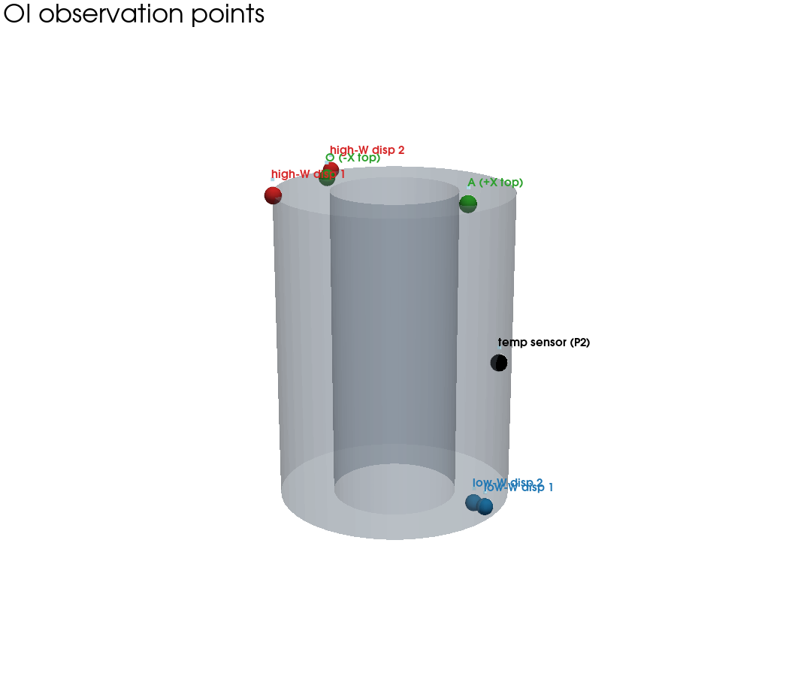
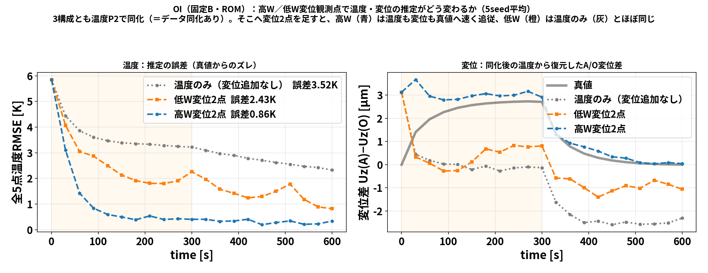
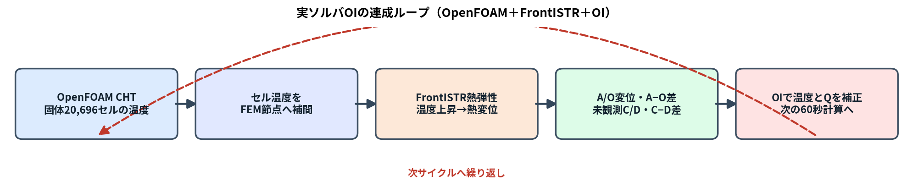
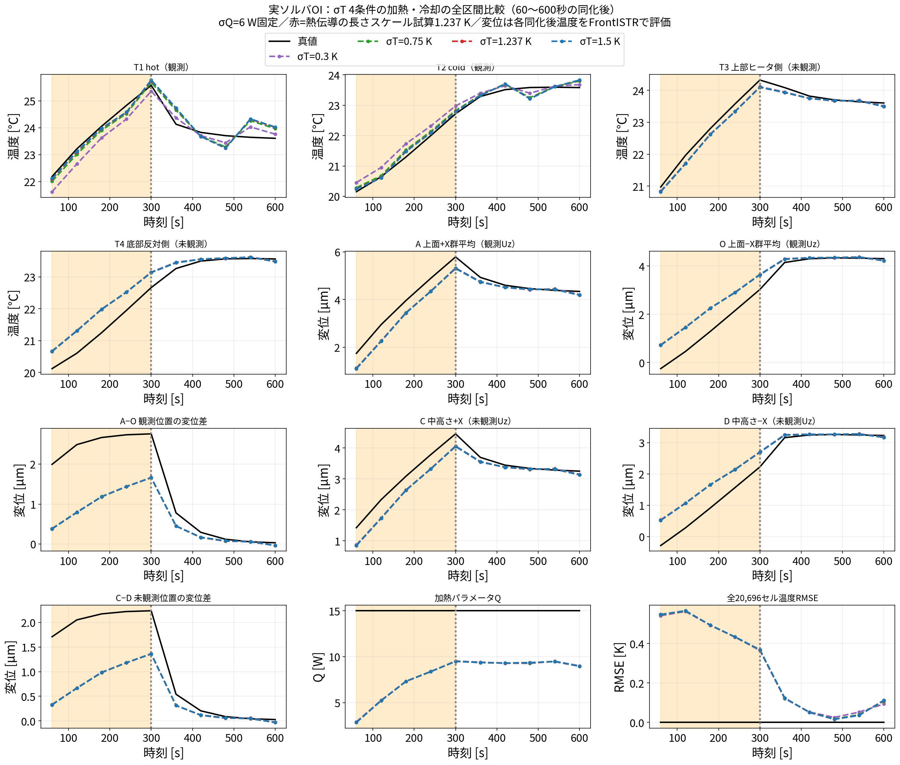

第2回は データ同化 です。データ同化とは、
少ないセンサの測定値を使って、シミュレーションの状態（全体）を真値へ近づける
技術です。この記事では一番シンプルな OI（Optimal Interpolation, 最適内挿） を扱います。
この記事の流れ： 1. OIとは何かを数式で理解する 2. 節点を3つに減らしたミニ模型で、行列計算を手で追って腑に落とす 3. どこを測ると効くかを熱感度（FrontISTRの $W$ ）の分布で見抜く 4. 最後に、104の実ソルバ（OpenFOAM＋FrontISTR）で回した比較結果を見る
いきなり結果を見ても分からないので、まず仕組み → 次に結果の順で進めます。
本物は固体20,696セルですが、いきなりは分かりません。まず 3点だけの温度 で考えます。
やりたいのは、1点だけ温度計を置いて測り、その1点の情報から 3点全部を真値へ寄せることです。
OI は次の4つの部品でできています。
これらから、更新式は たった1本です：
$$K=BH{T}(HBH{T}+R)^{-1}$$
言葉にすると：「予報のハズレ」に「配分の重み $K$ 」をかけて予報を直す、それだけです。 $K$ を作るのに $B$ （点どうしの連動）が効くので、次に具体的な数字で計算してみます。
背景共分散 $B$ の中身：いきなり数字にせず、まず記号で書くと構造が見えます。 $B$ の 対角は各点の分散、非対角は点どうしの共分散です:
$$B=$$
ここで $i$ は点 $i$ の予報の標準偏差、 ${ij}$ は点 $i,j$ の相関係数（ $-1$ 〜 $1$ ）。 $B$ は対称なので ${ij}={ji}$ 。この記号のまま更新式を追えるのがポイントです。
数字を入れるとき：どの点も予報は $i=2$ ℃ ばらつくとし（ $i^2=4$ ）、相関は 隣どうし ${12}={23}=0.5$ （連動大）、離れた $_{13}=0.2$ （連動小）:
$${11}={22}={33}=4, {12}={23}=0.5=2, {13}=0.2=0.8 ;; B=.$$
観測演算子 $H=(1, 0, 0)$ 。観測ノイズ 温度計の標準偏差 0.3 ℃ なので $R=0.3^2=0.09$ 。
$H=(1, 0, 0)$ が点1を抜き出すので、 $BH^{T}$ ＝「 $B$ の1列目」、 $HBH^{T}$ ＝「 $B$ の (1,1) 成分」。 まず 記号のまま書くと、ゲインの構造が見えます:
$$BH^{T}= , HBH^{T}+R=_{11}+R, K=.$$
＝「観測点との共分散 ÷（観測点の分散＋ノイズ）」。数字を入れると（ ${11}=4, {21}=2, _{31}=0.8, R=0.09$ ）:
$$K= =.$$
読み方：点1（測った点）は重み 0.978 でほぼ観測を信じる。点2は 0.489、点3は 0.196 と、 測っていない点にも $B$ の相関を通じて補正が配られる。近い点2ほど強く、遠い点3ほど弱く。
予報のハズレ： $y-Hx^b=30-25=5$ ℃。これをゲインで配分:
$$xa=xb+K = + =$$
| 点 | 予報 $x^b$ | 同化後 $x^a$ | 真値 | 効果 |
|---|---|---|---|---|
| 点1（観測） | 25 | 29.89 | 30 | ほぼ真値 |
| 点2（未観測） | 25 | 27.44 | 27 | 真値へ寄った |
| 点3（未観測） | 25 | 25.98 | 25 | ほぼ真値 |
たった1点の温度計で、測っていない点2・点3まで真値へ寄りました。 これが OI の効果です。ミソは 背景共分散 $B$ が「点どうしの連動」を持っていること。 「点1が予報より5℃高かった → 連動する点2も高いはず」と $B$ が教えてくれるので、補正が全体に広がります。
ここまでは温度だけでした。本研究の狙いは 温度と変位から、発熱量 $Q$ まで当てることです。 「温度を測る」「変位を測る」「 $Q$ を同定する」――この3つが、同じ1本の更新式
$$xa=xb+K,(y-Hxb),K=BH{T}(HBH{T}+R){-1}$$
の どこに入るかを、数字を入れずに 文字式のまま追うと本質がはっきりします。状態を3変数
$$x=(T_1, T_2, Q)$$
に絞ります。物理の仮定は2つだけ:
まず背景共分散 $B$ を 記号のまま作ります。温度の予報ばらつき $_T$ に加え、 温度が $Q$ で決まるので温度と $Q$ は必ず連動します。この連動を $a=(s_1, s_2, 1)^{T}$ の外積で入れると:
$$B= +_Q2,a,a{T} =.$$
ここが全ての鍵：右上・左下の $B_{TQ}=_Q^2,(s_1, s_2)$ が 「温度と $Q$ の相関」。 これがゼロだと、温度や変位をいくら測っても $Q$ は1ミリも動きません。 $Q$ が同定できるのは、この $B_{TQ}$ のおかげ（＝温度が $Q$ で決まるから）です。
温度計を点1に置くと $H=(1, 0, 0)$ 、観測ノイズ分散を $R=r$ とします。 $BH^{T}$ は「 $B$ の1列目」なので
$$BH^{T}=, HBH^{T}+R=_T^2+_Q^2 s_1^2+r,$$
$$K=
.$$
点1の温度しか測っていないのにゲインの $Q$ 行 $K_Q$ 。だから予報のハズレ $y-Hx^b$ が $Qa=Qb+K_Q(y-Hx^b)$ で $Q$ を動かします。分子の $Q^2 s_1$ は、まさに $B{T_1Q}$ 。 **「温度を測ると $Q$ が同定される」の正体は、この $B_{T_1Q}=_Q^2 s_1$** です。
変位計は温度を直接は測らず、温度の重み付き和を測ります。だから 観測演算子 $H$ が感度 $w$ そのものになります （これが本研究の $W=K_s^{-1}H_T$ の1行版）:
$$H_u=(w_1, w_2, 0).$$
$Q$ に効くのはゲインの3行目だけ見れば十分で、 $BH_u^{T}$ の第3成分は
$$(BH_u^{T})_Q=_Q^2 s_1 w_1+_Q^2 s_2 w_2=_Q^2,(sw).$$
温度と違い、変位は 複数点の温度の和なので、その1個の測定値が $B$ を通じて $T_1, T_2, Q$ 全部へ配られます。 $Q$ への効き目は $_Q^2,(sw)$ ＝「感度 $s$ と $w$ の内積」で決まる、というのが文字式で読み取れる要点です。
$Q$ の更新だけ取り出すと、ゲインの $Q$ 行を使って
$$Qa=Qb+K_{Q,:},(y-Hx^b).$$
これは確率の言葉では、同時分布 $p(T,Qy)$ から温度を 積分して消す（周辺化） した後の $Q$ の事後平均そのものです:
$$p(Qy)=p(T,Qy),dT, E[Qy]={Q^b} +{=,K_{Q,:}}(y-E[y]).$$
つまり 「周辺化の積分」＝「カルマン更新の $Q$ の行」。そして $Q$ と観測の共分散は
$$(Q,y)=B_{Q,:},H^{T}=_Q2,(s_1, s_2, 1),H{T}$$
で、温度観測なら $_Q^2 s_1$ 、変位観測なら $_Q^2(sw)$ 。 $Q$ が観測から動く条件は $(Q,y)$ 、すなわち「 $Q$ を変えると観測が変わる」ことです。 温度も変位も $Q$ で変わるので、両方が $Q$ の同定に効きます。
3つの入り方まとめ：
| やりたいこと | 更新式のどこで効くか（文字式） |
|---|---|
| 温度を同化 | $H$ が温度成分を取り出す（ $H=(1,0,0)$ ）。 |
| 変位を同化 | $H$ が 温度→変位の感度 $w$ になる（ $H_u=(w_1,w_2,0)$ ）。 |
| $Q$ を同定 | $B$ の **温度と $Q$ の相関 $B_{TQ}=_Q^2 s$** が $(Q,y)$ を生み、観測が $Q$ を動かす（＝周辺化）。 |
すべて更新式の $H$ （何を測るか）と $B$ （何が連動するか） に落ちます。本物の 20,697 次元 （温度20,696セル＋ $Q$ ）でも、行列が大きいだけで、やっている計算はこの3×3と同じです。 ただし決め打ち $B$ の $_Q$ で $Q$ の伸び幅が決まるため、1回では真値まで届かない （60秒ごとに何度も更新）。この決め打ちの弱さを分身の散らばりで作り直すのが EnKF（blog_003）です。
3点模型では「点1を測る」と決め打ちしましたが、本研究では 観測点を感度で設計します。 特に 変位センサをどこに置くかは、FrontISTR で求めた 熱感度 $W$ の分布で決めます。
温度節点ベクトルを $T$ 、熱荷重行列を $H_T$ 、構造剛性行列を $K_s$ とすると、線形熱弾性では
$$K_s u=H_T T,W==K_s^{-1}H_T.$$
$W_{ij}$ は「温度節点 $j$ を1 K変えたとき、変位自由度 $i$ がどれだけ変わるか（m/K）」です。 変位観測点 $i$ の候補を選ぶときは、その行の大きさ $S_i=j W{ij}$ を比べます。 $S_i$ が大きい場所ほど、温度場の違いが変位観測に強く現れる＝同化に使える情報が大きい。
この $W$ の行感度を円筒上に色で描くと、どこが高感度かが一目で分かります。
105のFrontISTR（DUMPWパッチ版）が計算した $W$ の変位行感度を色で表示（灰色は拘束などで除外した点）。 底面固定・上端自由なので、上端（自由端）ほど熱感度が高い。 赤球＝変位観測点 A(+X上面)・青球＝O(−X上面) は、この高感度域に置かれている。
分布から読み取れること：
この感度は 106 のROM中で推測したものではなく、105でFrontISTRを実行して得た結果を使いました。
105…/run/dumpw_cylinder.py が FrontISTR で DUMPW=YES を指定し、温度→変位感度を出力。105…/run/build_W_from_dumps.py が $K_s,H_T$ のダンプから $W=K_s^{-1}H_T$ を構築。105…/run/kinvh_sensitivity.py が行感度 $S_i$ を計算し、拘束部の見かけの巨大値を除外して高感度2点・低感度2点を選ぶ。run/run_disp_selection.py が、温度点に高感度／低感度の変位2点を加えて比較。補足：温度センサの選定はこれとは別で、未知の発熱への感度 $T/Q$ を使います （「変位センサは $W$ 、温度センサは $T/Q$ 」）。
第4節で選んだ観測点を、実際に OI（固定 $B$ ） で回して確かめます。まず 観測点の場所（3D）:

黒＝温度センサ P2（ヒータ側・中央高さ）、赤＝高W変位2点（上端の自由端）、青＝低W変位2点（底面近くの拘束側）、緑＝A/O（上面）。 第4節の「上端ほど高感度・底面は低感度」という分布どおりの配置になっています。
比較する4構成のうち、下の1つはデータ同化なし、上の3つはすべて温度P2で同化します:
同じ真値・初期条件で OI（106の5点温度ROM、背景共分散 $B$ を固定） で回し、温度と変位を比べました（5seed平均）。
まず「実際の値」の時系列で追従の様子を見ます。左は観測に使っていない点 P1 の温度、右は変位差 $U_z(A)-U_z(O)$ です（どちらも黒太線＝真値）。

赤（データ同化なし）は加熱で真値からどんどん離れ、P1温度は真値25°Cに対し31°Cまで暴走。 温度P2で同化する（灰）と真値へ引き戻され、高W変位2点を足す（青）と未観測点P1でも真値に最も寄り、変位も真値に追従します。 「観測していない場所」まで直るのが、感度の高い点で同化することの効果です。
次に、同じ結果を誤差（RMSE）と変位差でまとめたのが下の図です。

これは OI（最適内挿）によるデータ同化の結果（固定 $B$ ・ROM）。 左＝温度の推定誤差（全5点RMSE）、右＝変位差 $U_z(A)-U_z(O)$ の時刻歴（黒＝真値）。 赤（データ同化なし）は補正されないので真値から最も外れたまま。温度P2で同化すると灰へ改善し、 高W（青）は温度も変位も真値に最も近い。低W（橙）・温度のみ（灰）は温度がなかなか下がらず、 変位に至っては真値から大きく外れる（変位は $W$ が温度誤差を増幅するため、悪い温度だと特に外れる）。
| 観測構成 | データ同化 | 加熱期(0-300s)の平均温度RMSE |
|---|---|---|
| データ同化なし（自由予測） | なし | 5.27 K（基準線） |
| 温度のみ（変位を足さない） | 温度P2 | 3.52 K |
| 温度＋変位2点（低W） | 温度P2＋変位 | 2.43 K（あまり効かない） |
| 温度＋変位2点（高W） | 温度P2＋変位 | 0.86 K（同化なしの約6倍改善） |
→ 測る場所が悪いと、同化してもほとんど直らない。OI でも、第4節の感度分布で高W点を選ぶことがそのまま効きます。 （感度 $W$ 自体は105のFrontISTR計算由来。再現は run/blog_oi_disp_selection.py。EnKF版でも同じ傾向です。）
ここまでは考え方の理解でした。ここからは 104のOpenFOAM＋FrontISTR実ソルバで回した結果です （106のROMではなく、実ソルバの結果を106の全体ストーリーに追加したもの）。連成の流れ:

下の結果グラフがどの点の値かを先に示します（σQ・σTスタディ共通の観測点・評価点）:

円筒上の観測点・評価点。赤＝T1=hot／T2=cold（観測に使う温度2点、中央高さ）、緑＝A/O（観測に使う上面変位）。 橙＝T3/T4（観測に使わない未観測の温度点）、青＝C/D（観測に使わない未観測の変位、中高さ z=75 mm）。 C−D差は「同化に使っていない別の変位差」で、同化がその未観測点まで当たるか（汎化）を見る評価量です。 （A/Oは実際には上面の +X/−X 節点列の平均。側面投影版は 18_oi_sigma_t_validation.md の oi_evaluation_locations.png 参照。）
背景発熱量の標準偏差を $_Q=0.5,2,6,50$ Wと変え、 $_T=1.5$ K・観測点・初期値・60秒更新を揃えて比較しました。 温度は hot/cold と未観測点、変位は上面A/Oとその差、さらに未観測中高さC/DとC−D差を評価しています。

最終の温度場RMSEは 0.090〜0.113 K まで小さくなる一方、推定 $Q$ は 8.82〜8.96 W で、真値15 Wに届きませんでした。 つまり、温度分布がよく合っても、発熱量 $Q$ が同じ精度で同定できるとは限らない（弱可同定）。 しかも $_Q$ を100倍振ってもほぼ変わらない＝決め打ち $B$ の調整だけでは $Q$ を当てられない、というのがOIの弱点です。
背景温度の標準偏差 $_T=0.3,0.75,1.237,1.5$ K を実ソルバで比較しました （1.237 Kは、長さ75 mmの温度誤差モードを60秒拡散させた残り $5$ K という試算値）。

加熱期の全場温度RMSEは 0.479〜0.482 K、未観測C−D変位差RMSEは 1.188〜1.192 µm と、σTを動かしてもほぼ不変でした。 この固定共分散・固定感度のOIでは、σTだけで温度場・変位差・ $Q$ を同時に真値へ合わせることはできません （OI一般の限界ではなく、今回の観測配置と共分散近似に対する結論）。詳細は 18_oi_sigma_t_validation.md 参照。
ミニ模型と本物の対応:
| ミニ模型 | 本物（106/104） |
|---|---|
| 3点の温度 | 固体20,696セルの温度（＋発熱 $Q$ ） |
| 観測1点 | 温度 hot/cold の2点＋上面変位2点 |
| $B$ を手で置く | $_T,_Q$ を決め打ちして $B$ を作る（固定） |
| 割り算1回 | $HBH^{T}+R$ の小さい行列を1回だけ逆行列 |
本物の OI も やっていることは全く同じ：予報1本＋固定 $B$ ＋観測で、更新式 $xa=xb+K(y-Hx^b)$ を回すだけ。 アンサンブル（多数の分身）を使わないので 軽いのが OI の長所です。
一方で $B$ を 決め打ちする弱点（ $Q$ が真値に届かない）もあります。 その弱点を アンサンブルで $B$ を毎回作り直して補うのが、次回の EnKF です。
次回（blog_003）は アンサンブルカルマンフィルタ（EnKF）。 「 $B$ を決め打ちしない」で、多数の分身の散らばりから $B$ を毎サイクル作り直すやり方を、 やはり 節点を減らした具体的な手計算で見ていきます。
00_data_assimilation_algorithm.md../../105_0_sensor_placement_sensitivity/docs/03_sensor_design_guide.md18_oi_sigma_t_validation.md02_full_story.md